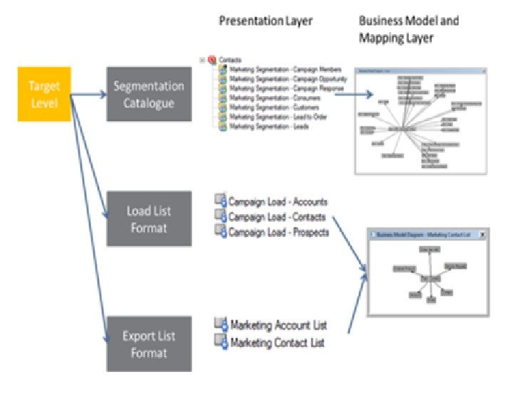

Data is Your Most Valuable Asset
In CRM, data quality directly impacts business success. Poor data leads to missed opportunities, frustrated customers, and wasted resources. This module teaches you how to maintain high-quality customer data.
Module Topics
- Ensuring data accuracy and completeness through validation
- Data cleansing and de-duplication techniques
- Importing and exporting data using EIM
- Defining and managing customer segments
- Using segmentation for targeted marketing
- Contact and account management best practices
- Creating and managing service requests
- Handling customer cases and issues
üìä Industry Stat: Studies show that poor data quality costs organizations an average of $15 million per year in lost revenue and operational inefficiency.
Estimated reading time: 4 minutes
Ensuring Data Accuracy and Completeness
Prevention is better than cure. Siebel provides multiple mechanisms to enforce data quality at the point of entry.
Validation Mechanisms
1. Required Fields
Setting the "Required" property on a Business Component field ensures users must provide a value before saving.
Configuration:
- Open the Business Component in Web Tools
- Navigate to the Field definition
- Set
Required = TRUE
User Experience: Required fields show an asterisk (*) and block save if empty
2. Validation Rules
The "Validation" property contains a logical expression that must evaluate to TRUE for the record to save.
Example validation rules:
// Ensure probability is 0-100
[Probability] >= 0 AND [Probability] <= 100
// Ensure close date is in future
[Close Date] > Today()
// Ensure email format is valid
[Email] LIKE '%@%.%'
3. Pick Lists (Bounded)
Bounded pick lists restrict user input to predefined values, eliminating free-text variations.
Example: Status field limited to: New | In Progress | Resolved | Closed
Benefit: Ensures consistency for reporting and automation

Validation rules prevent bad data from entering the system
Estimated reading time: 10 minutes
Data Cleansing Techniques
While validation prevents new bad data, cleansing addresses data that's already in the system. The primary focus is de-duplication.
The Duplicate Problem
Why duplicates occur:
- Multiple users creating the same account independently
- Slight name variations (IBM vs. IBM Corporation)
- Data imports from different sources
- Typos and data entry errors
Impact of duplicates:
- Incomplete customer view (data scattered across records)
- Inefficient operations (duplicate marketing emails)
- Poor reporting accuracy
- Customer frustration (multiple account numbers)
Siebel's De-duplication Process
Step 1: Define Matching Criteria
Configure rules that identify potential duplicates. Rules can match on:
- Exact match: Names are identical
- Phonetic match: Names sound similar (Smith vs. Smyth)
- Fuzzy match: Names are close but not exact
- Combination: Match on name + ZIP code, or name + phone
Step 2: Run De-duplication Job
Siebel's Dedupe Manager runs as a batch process, scanning records against your criteria.
Step 3: Review Matches
Potential duplicates are flagged for human review. Users compare side-by-side and decide if they're truly duplicates.
Step 4: Merge Records
Confirmed duplicates are merged into a single "master" record. Siebel:
- Combines data from both records (choosing best values)
- Reassigns all related records (activities, opportunities, etc.) to the master
- Marks duplicate records as merged/inactive
- Maintains audit trail of the merge
End-to-end data quality process: validate → cleanse → monitor
Estimated reading time: 12 minutes
Importing and Exporting Data with EIM
Enterprise Integration Manager (EIM) is Siebel's powerful batch tool for moving large volumes of data in and out of the system.
When to Use EIM
- Initial data load: Migrating from a legacy system
- Bulk updates: Changing thousands of records at once
- Regular imports: Daily feeds from external systems
- Data extracts: Exporting for reporting or archival
Scale: EIM can handle millions of records in a single run, far beyond what's practical through the UI or web services.
EIM Architecture
Interface Tables
Staging tables where you load your data before EIM processes it. Names follow pattern: EIM_*
Examples:
EIM_ACCOUNT - Stage account dataEIM_CONTACT - Stage contact dataEIM_SR - Stage service request data
EIM Process Flow
- Prepare data: Format your data to match interface table structure
- Load interface tables: Use SQL loader or database tools to insert data
- Configure EIM: Create a .IFB configuration file defining the import/export parameters
- Run EIM: Execute the EIM utility from command line
- Review results: Check logs for errors, validate data in Siebel

EIM processes data through staging tables into Siebel base tables
üí° Best Practice: Always test EIM imports on a copy of production data first. Errors can corrupt data and are difficult to roll back.
Estimated reading time: 10 minutes
Defining and Managing Customer Segments
Segmentation divides your customer base into groups with similar characteristics, enabling targeted marketing and personalized service.
Why Segment Customers?
- Targeted marketing: Send relevant offers to the right people
- Personalized service: Tailor interactions based on customer value
- Resource optimization: Focus efforts on high-value segments
- Improved conversion: Messaging that resonates increases response rates
Common Segmentation Criteria
Demographic Segmentation
- Industry (telecommunications, healthcare, finance)
- Company size (SMB, Mid-Market, Enterprise)
- Geographic location
Behavioral Segmentation
- Purchase history (frequency, recency, value)
- Product usage patterns
- Service request volume (high-touch vs. low-touch)
- Channel preference (email, phone, self-service)
Value-Based Segmentation
- Customer Lifetime Value (CLV)
- Revenue contribution
- Profitability
- Growth potential

Multi-dimensional segmentation enables precise targeting
Estimated reading time: 9 minutes
Creating Segments in Siebel
Siebel's Marketing module provides powerful tools for defining dynamic segments that automatically update as customer data changes.
Segment Types
Static Segments
A fixed list of customers. Members don't change unless manually added/removed.
Use when: One-time campaign to a specific list
Dynamic Segments
Defined by criteria (rules). Membership is recalculated each time the segment is used.
Example criteria:
[Account Revenue] > 1000000 AND
[Industry] = 'Telecommunications' AND
[Num Service Requests Last Year] < 5
Use when: Ongoing campaigns where target audience evolves
Segments enable precision targeting for higher campaign ROI
Estimated reading time: 8 minutes
Contact and Account Management Best Practices
Accounts and Contacts are the foundation of your CRM data. Proper management ensures data integrity and usability.
Account vs. Contact
Account (Organization)
Represents a company or organization you do business with.
Key fields:
- Account Name
- Industry
- Revenue
- Number of Employees
- Primary Address
Contact (Person)
Represents an individual person associated with an Account.
Key fields:
- First Name, Last Name
- Job Title
- Email, Phone
- Parent Account (which company they work for)
Best Practices
- One Account per company: Avoid duplicates by searching before creating
- Complete critical fields: Ensure phone, email, and address are populated
- Maintain relationships: Always link Contacts to their Account
- Use naming conventions: Standardize how company names are entered
- Regular data reviews: Quarterly audits to identify and fix issues
Estimated reading time: 7 minutes
Creating and Managing Service Requests
Service Requests (SRs) are how customers report problems and ask for help. Efficient SR management is critical to customer satisfaction.
SR Lifecycle
- Creation: Customer contacts support via phone, email, chat, or self-service portal
- Assignment: Siebel routes the SR to the appropriate team/agent based on rules
- Diagnosis: Agent investigates the issue, potentially escalating to specialists
- Resolution: Agent fixes the problem or provides a solution
- Closure: Customer confirms satisfaction, SR is marked resolved
Complete SR lifecycle from creation to closure
Key SR Fields
- SR Number: Unique identifier (auto-generated)
- Status: Open, In Progress, Pending Customer, Resolved, Closed
- Priority: Critical, High, Medium, Low
- Category/Type: Classifies the problem (Billing, Technical, etc.)
- Owner: Agent currently responsible
- Description: Detailed problem statement
- Resolution: How the issue was resolved
Estimated reading time: 9 minutes
Module Summary: Managing Customer Data
Congratulations! You've completed the data management module. You now understand how to maintain high-quality customer data in Siebel.
✅ Key Skills Acquired
- Implementing data validation to ensure accuracy
- Using de-duplication to cleanse existing data
- Importing and exporting data with EIM
- Creating customer segments for targeted marketing
- Managing accounts and contacts effectively
- Handling service requests through their full lifecycle
üéØ Ready for Hands-On Practice
You've now completed all three theoretical topics for Day 1. It's time to apply what you've learned in the practicals!
Day 1 Practicals include:
- Lab 1: UI Exploration and Navigation
- Lab 2: Workspace Configuration Exercise
- Lab 3: Data Import and Validation
üéì Day 1 Theory Complete! After the practicals, you'll have a solid foundation in Siebel fundamentals, configuration, and data management.
Module completion time: ~1.5 hours